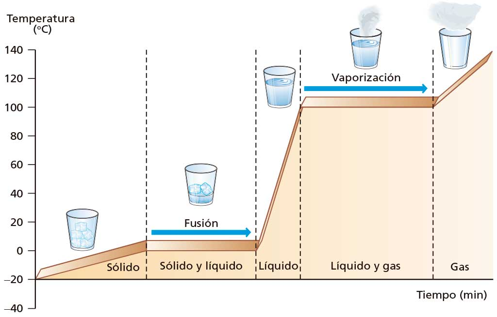
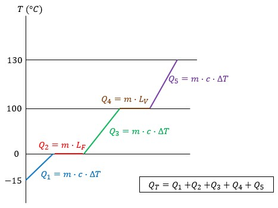

La temperatura a la que se produce cada cambio de estado será distinta para cada sustancia.
Esta representación gráfica temperatura-tiempo se conoce como Diagrama de Calentamiento. Donde, se infiere que para poder transformar de sólido a gas se requieren 5 calores. A continuación, se presenta un ejemplo que muestra un Diagrama para transformar hielo a -13°C en vapor a 130°.
